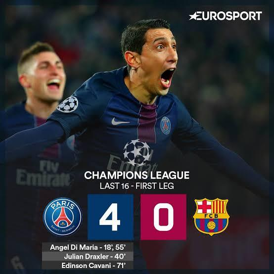
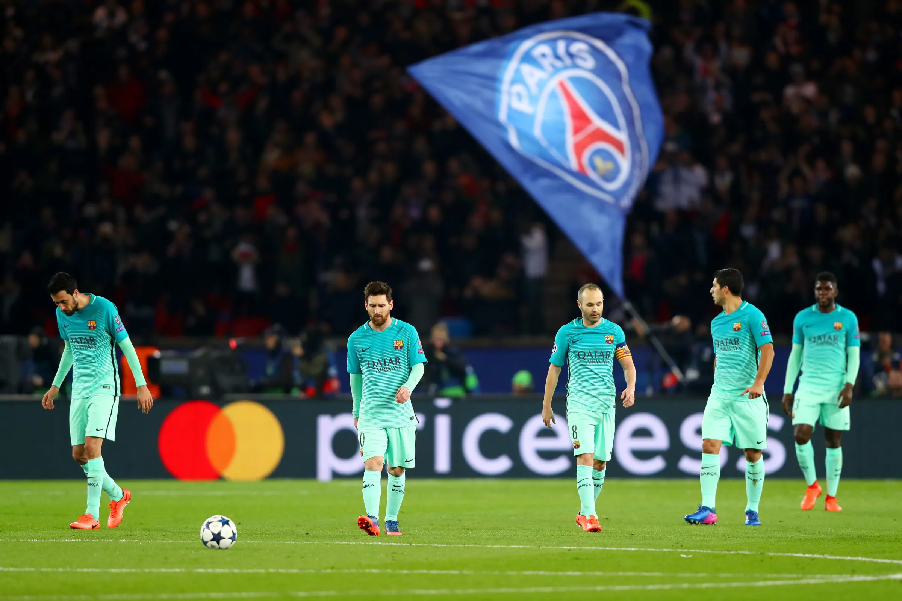
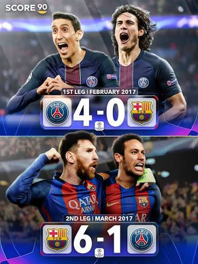

The Setup
This happened on March 8,2017,at the Camp Nou.It is famously known as "La Remontada",which means comeback in spanish.
To understand the craziness of this remontada,you have to look at first leg of this match where PSG thrashed Barca 4-0.
No team in champions league history had ever recovered from 4-0 first leg loss.Everyone thought that it was over for Barca.


How The Famous Comeback Happened
The game started in Camp Nou with an electrifying experience.Barcelona wanted to give all that they can.But it was nearly impossible,but they had the home crowd support.
Order of Events
- Luis Suarez scores close range header inside first 3 minutes making it 1-0 to Barcelona.
- Layvin Kurzawa turns the ball into his own net under pressure from Andrés Iniesta at 40th minute to make scoreline 2-0 to Barcelona.
- Lionel Messsi(G.O.A.T) scores penalty to make it 3-0 after Neymar was fouled by Thomas Meunier.
- Cavani fires half-volley into the roof of the net in 62nd minute and almost confirming PSG's win.
- Neymar curls direct freekick brilliantly into top corner in 88th minutes giving some hopes.
- Neymar scores penalty earned by Suarez and makes it 5-5 on aggregate but PSG was winning on away goals.They needed a winner.1% Chance,100% Faith.
- Sergi Roberto scores the winner in 95th minute from Neymar's excellent lofted pass making it 6-5 on aggregate and winning it for Barcelona.
If you don't have time to read full match events,you can directly jump to Final Conclusion Section here.
Match Stats
| Stat Name | Barcelona | PSG |
|---|---|---|
| Goals(This Game) | 6 | 1 |
| Goals(Aggregate Total) | 6 | 5 |
| Possession | 71% | 29% |
| Shots on Target | 10 | 3 |
| Yellow Cards | 5 | 5 |
| Corners | 6 | 4 |

The Main Players on the Night
You can read official reviews on the UEFA Official HomepageYou can see stats and ratings.
- Neymar Jr: He was the best player on the pitch that night.Scoring 2 goals and providing 1 major assist secued a perfect 10 rating.
- Sergi Roberto He came off the bench and scored the final goal.
- Luis Suarez He opened the scoresheet for Barcelona scoring a great header and in crucial phase,won a penalty.
You can also check another detailing Other Famous Matches It includes many more exciting games.
Conclusion
To wrap things up, La Remontada is the comeback that no one expected and seemed impossible.No one could have think of that.It was a masterpiece and it was only possible due to presence of The Prince:Neymar.
Although Barca didn't win the Champions League,this game became more famous than the final.It remains a legendary night that football fans will never forget.